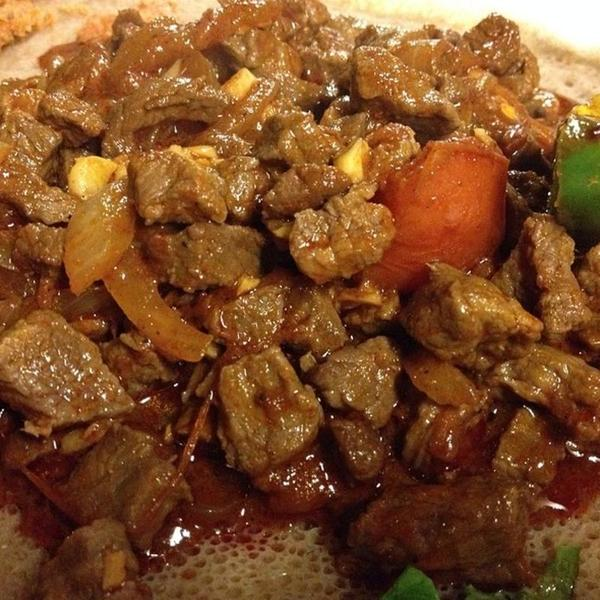

Beef Tibs

1 large red onion, about 2 cups, sliced thin
1/4 cup niter kebbeh or ghee spiced butter
2 pounds venison, lamb or beef, cut into bite-sized pieces
2 tablespoons berbere
1 teaspoon ground fenugreek
1/2 teaspoon cardamom (optional)
1/2 teaspoon ground ginger
1/4 teaspoon cumin
1/4 teaspoon ground clove
1 teaspoon black pepper
3 to 4 garlic cloves, sliced thinly
2 cups whole peeled tomatoes, broken into bits
1 to 5 green chiles, such as jalapenos or serranos
1/2 cup red wine
Instructions
Get the saute pan or wok very hot. Stir-fry the onions without the butter for a few minutes, until they char just a little on the outside. Add the spiced butter and the venison. Stir-fry hot and fast until the outside of the meat is brown but the inside of the meat is still very rare. You need to do this on as hot a burner as you have. Do it in two batches unless you have a very large wok or pan.
The moment the meat has browned, add it all back into the pan along with the spices, garlic and chiles. Stir-fry another 30 seconds or so, then add the tomatoes and the wine. Toss to combine and let this cook for a minute or two. Serve at once with bread or injera.